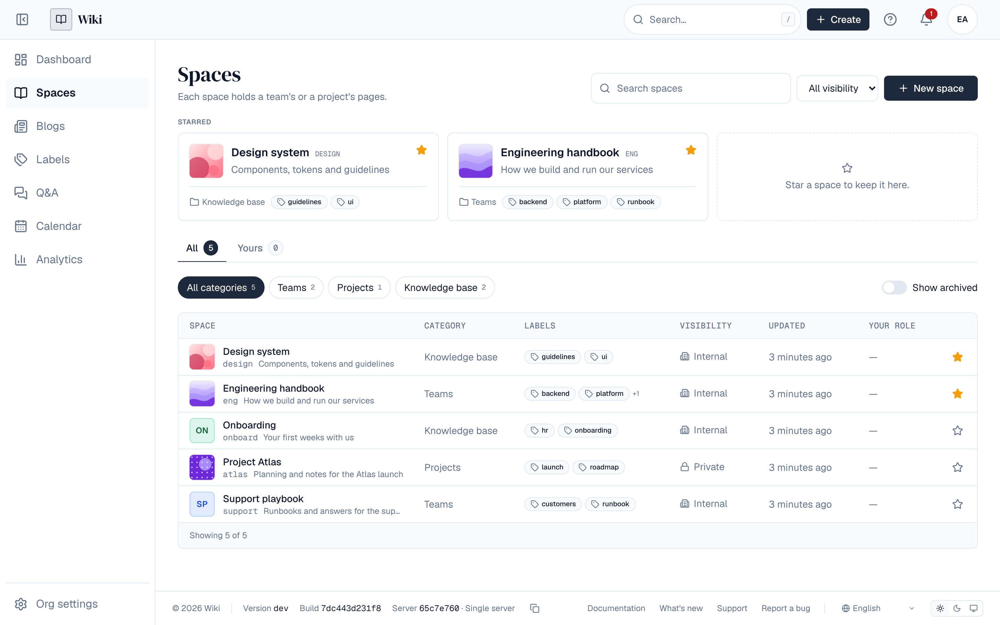
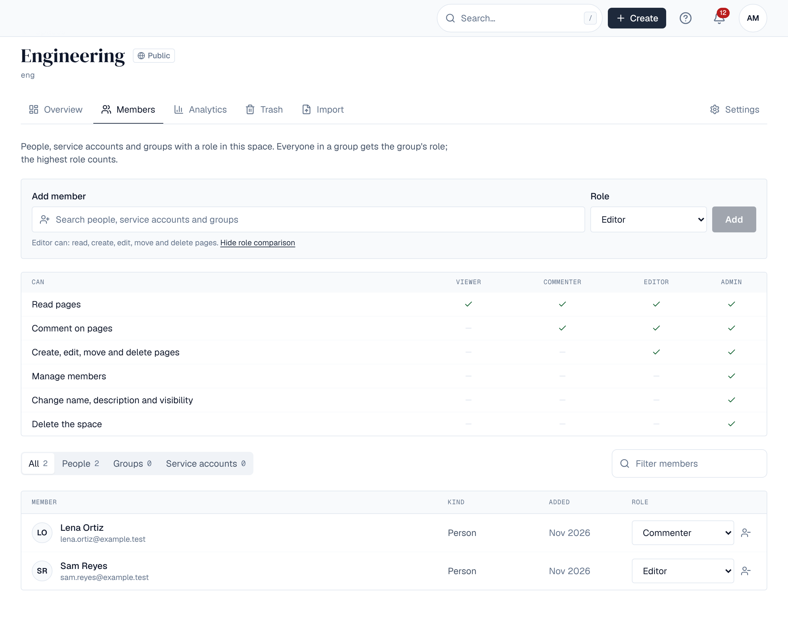
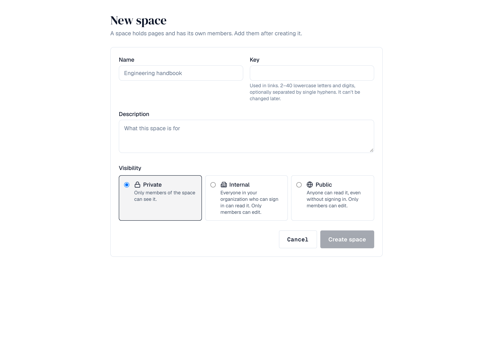
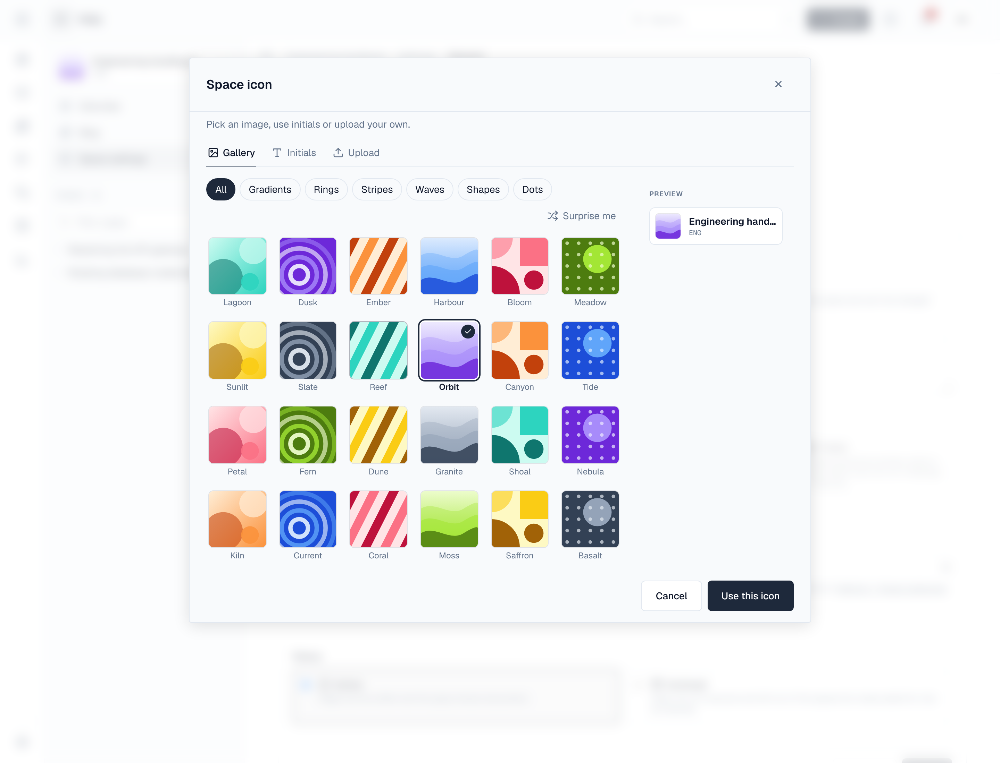
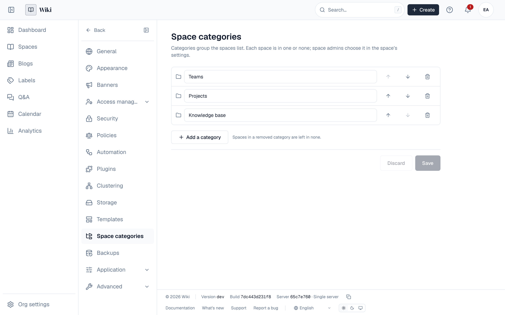
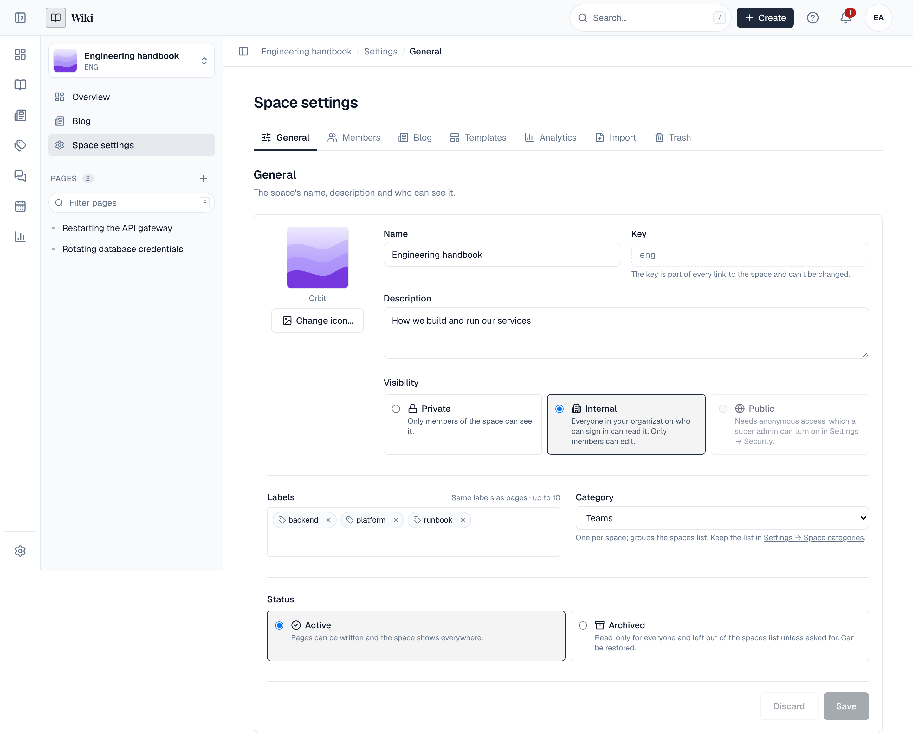

1. What a space is
A space holds a team's or a project's pages, and has its own members. Every page belongs to one space, and the space decides who can read it and who can write. Pages have no access rules of their own: everyone who can read the space can read all of its published pages.
2. The space list
Spaces in the sidebar lists every space you can see, with its icon, visibility, category, labels, when it last changed and your role. All shows them all, Yours only those where you have a role. Filter by name with Search spaces, by visibility, or by category with the chips above the list (each shows how many spaces it holds).
- Starred spaces show as cards at the top. Select the star next to a space, on the list or on its overview, to star or unstar it. Stars are yours alone: nobody else sees them.
- Select a label on a space to list only the spaces with that label; select it again, or the cross on the filter, to see them all.
- Archived spaces are left out. Turn on Show archived to list them too.

Besides its pages, each space has a Blog tab for dated posts: updates, announcements and stories. See Space blogs.
3. Who can see a space
| Visibility | Who can read | Who can edit |
|---|---|---|
| Private | Only members of the space | Members with the Editor or Admin role |
| Internal | Everyone in your organization who can sign in | Members with the Editor or Admin role |
| Public | Anyone, even without signing in | Members with the Editor or Admin role |
A space can only be made public while anonymous access is on, which a super admin turns on in Settings → Security. If anonymous access is turned off later, public spaces stay readable by signed-in people only until it is back on. See Anonymous access.
4. Roles
Each member of a space has one role. A person can be a member directly or through a group; everyone in a group gets the group's role, and the highest role a person has counts.
| Can | Viewer | Commenter | Editor | Admin |
|---|---|---|---|---|
| Read pages | Yes | Yes | Yes | Yes |
| Comment on pages | No | Yes | Yes | Yes |
| Create, edit, move and delete pages | No | No | Yes | Yes |
| Write blog posts and edit your own | No | If the space allows | Yes | Yes |
| Edit anyone's blog post, manage the blog | No | No | No | Yes |
| Manage members | No | No | No | Yes |
| Change name, description and visibility | No | No | No | Yes |
| Delete the space | No | No | No | Yes |
5. Members
The Members tab lists the people, service accounts and groups with a role in the space. Compare roles shows the table above. Filter by kind (People, Groups, Service accounts) or by name.

- Open the space, then Members.
- Add member, search for a person, service account or group, pick a Role and Add.
- To change a role, pick another one next to the member. To take a member out, Remove and confirm. Roles they have through a group stay.
Only the space's admins can add members or change roles. Only the space's members, and people allowed to view profiles, can see who has a role in it.
6. Creating a space
Create → Space in the header, or New space on the space list, opens the form. By default only super admins may create spaces. Creating a space gives nobody a role in it: add members, and an admin, right after.

| Field | What to enter |
|---|---|
| Name | What people call the space, such as Engineering handbook. |
| Key | Used in links (/spaces/eng). 2–40 lowercase letters and digits, optionally separated by single hyphens. It can't be changed later. |
| Description | What the space is for, shown on its overview. |
| Visibility | Private, internal or public (above). |
7. Icon, labels and category
Each space has an icon, which shows next to its name on the space list, its overview and the space switcher. Until an admin picks one, the space shows the first letters of its name. Space admins change it in Settings → General with Change icon…:
| Kind | What it is |
|---|---|
| Gallery | One of 24 built-in abstract images, grouped by style (gradients, rings, stripes, waves, shapes, dots). Surprise me picks one at random. |
| Initials | Up to 8 characters, such as two letters or an emoji, on one of six theme colours. Left empty, the letters come from the space's name. |
| Upload | Your own image: PNG, JPEG or WebP, up to 2 MB. It is cropped to a square from the middle. |
The preview shows the icon as it will appear. Use this icon saves it at once.

- Labels: up to 10 per space. They are the same labels pages carry, so a label's page lists the spaces with it as well as its pages. See Labels and feedback.
- Category: one per space, or none. Categories group the space list; the list of categories is kept by administrators in Settings → Space categories (below).
8. Archiving a space
A space that is no longer worked on can be archived instead of deleted. Space admins set Status to Archived in Settings → General and save.
- Its pages stay readable by the same people, but nobody can create, edit, move or delete pages, write blog posts, comment or import into it, admins included.
- It is left out of the space list (unless Show archived is on) and of the space switcher. Links and search still find its pages.
- Its overview says it is archived and since when.
- To restore it, set Status back to Active. Members, roles and settings are kept while it is archived.
9. Space categories
Settings → Space categories holds the categories spaces can be in, such as Teams, Projects or Knowledge base: add, rename, reorder or remove them, then Save. Up to 50 categories, each up to 50 characters. Removing a category leaves its spaces in none. It needs the settings:write permission, which super admins have.

10. Space settings
The space's admins see a Settings tab:
- General: the name, description, visibility, icon, labels, category and status. Save applies them; Discard puts back what is saved. The key is fixed.
- Templates: the space's own templates, and which of the library's templates it offers. See Copies and templates.
- Delete space: removes the space, its pages and its members' roles for good. Type the space's key to confirm.

Deleting a space can't be undone. Its pages don't go to the trash.
11. Events and API for space properties
Changing a space's icon, category or status raises space.update; archiving and restoring also raise space.archive and space.restore, changing its labels raises space.label.update, and saving the category list raises space_categories.update. Policies can refuse them, for example to keep certain spaces from being archived, and automation can react. Stars raise no event: they are personal, like watching a page. Every change except a star is in the audit log.
| Method | Path | Permission | What it does |
|---|---|---|---|
| PATCH | /api/spaces/{key} | Space admin | Also sets icon (initials or gallery), categoryId (0 for none) and status (active or archived) |
| PUT | /api/spaces/{key}/icon | Space admin | Upload an image as the icon (the raw PNG, JPEG or WebP as the body) |
| GET | /api/spaces/{key}/icon | Read the space | The uploaded icon |
| PUT | /api/spaces/{key}/labels | Space admin | Replace the space's labels |
| PUT, DELETE | /api/spaces/{key}/star | Read the space, signed in | Star or unstar the space for yourself |
| GET | /api/spaces | Signed in or anonymous | Also filters by status, category, label and starred=true |
| GET | /api/wiki/space-categories | Anyone who may list spaces | The categories |
| PUT | /api/wiki/space-categories | settings:write | Save the category list whole |
12. Other tabs
- Trash: pages deleted in the space, for people who can edit pages. See Pages and the page tree.
- Import: bring in a Confluence space export or Markdown files (space admins, when imports are allowed). See Import and export.
- Analytics: how the space's pages are read, when your licence includes analytics. See Analytics.